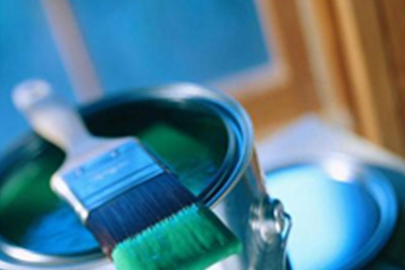
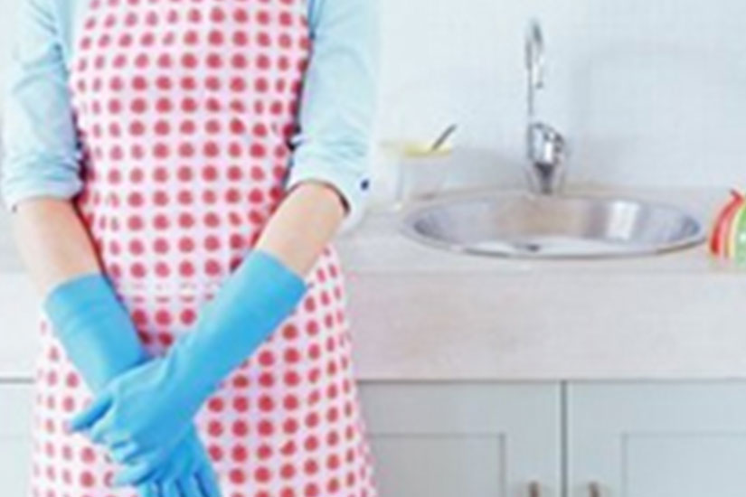
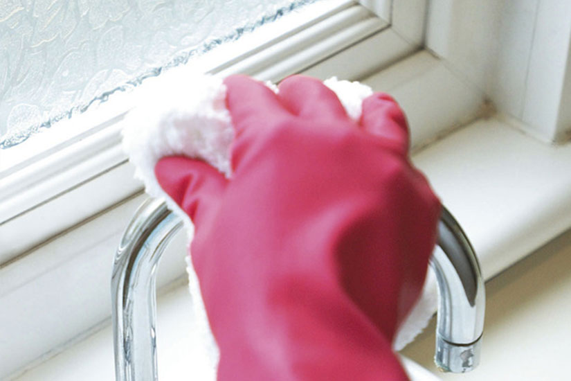

人道家事管理
您的優質清潔公司-清潔的乾乾淨淨 提供居家清潔...等服務-人道清潔公司

人道全省家事管理
人道家事管理服務團隊，全省為忙碌的妳提供專業、安全、有效率、有隱私的居家清潔、家事管理、到宅清潔、家事清潔、家事服務 、 衣物清潔、 簡易收納、代購物品、 炊事服務,包括、接送小孩、簡易收納、就醫處理、代購物品、老人陪伴、社區居家服務 、膳食、整燙 、收納……從一般的清潔打掃,到家事管理等內容的服務,依您的需要彈性的來配合、安排服務時段做服務。
人道鐘點管家，為您的家人,提供純淨的家庭空間、打造一個溫馨、甜蜜的家。

全省居家清潔
居家環境清潔包含客廳、廚房、臥室、浴室等清理工作皆屬於我們的服務範圍，但為顧及客戶隱私，未經客戶同意，封閉式櫥櫃內及貴重物品的清潔不列入服務項目；每次進行服務，除固定的除塵及清拭工作包括除塵、拖地版、清浴廁、清洗廚房、洗碗、清垃圾、換床單等外，並會同時進行逐一區域的徹底清潔工作，讓您輕鬆擁有乾淨舒適的居家生活。

人道房屋修繕服務中心
房屋增建、新建、舊屋翻新、廚房修改建、土木泥水工營造、地磚、防水處理、空調、景觀設計、水電、防盜監控、搬家、輕鋼架、木工裝潢、油漆、地毯、壁紙、等全方位的服務。
由僱主您來評量服務人員、做獎賞或剔除。
人道擁有全省精挑細選、具專業、經驗實在服務的服務團隊、以最實在的價格服務人道之友。更歡迎相關技術、品優人員共同加入、人道房屋修繕服務團隊。